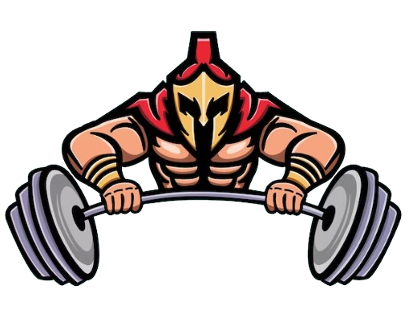

Com a grande pandemia mundial desde os anos 2000 sobre a obesidade, o número de interessados na prática rotineira de exercícios físicos aumentou muito. Com isso aumentou muito também o número de “profissionais” no setor, o que pode te levar a problemas de diversos tipos, sejam: cardiovasculares, acentuação de artroses, desvios na coluna e muito mais.
Venham para um local onde a tua saúde será colocada em primeiro lugar!!
ACADEMIA SPARTA, ESSA SIM, SE PREOCUPA COM VOCÊ.
